Section: Home Routes Alternative Create
Для создания функции маршрутизации альтернативных платежей выберите фильтр
| Field | Description |
|---|---|
| Account Id * | Выбирете аккаунт |
| Payment Method * | Выбирете платежный метод |
После выбора настроек нажмите кнопку 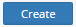
Скриншот :
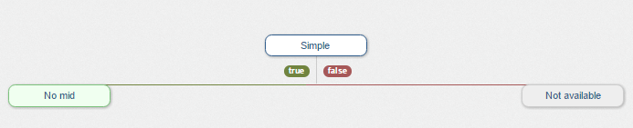
Нажмите на поле для выбора правил 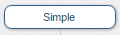
Список правил
| Rule | Description |
|---|---|
| Random | Вы можете указать процент транзакций, которые будут поступать на левый MID. Другие будут перенаправлены вправо. |
| Amount | Настройка по сумме транзакции |
| Currency | Настройка по валюте для MID |
| Simple | Всегда будет отправлять при успешной транзакции |
| AffId | Транзакции идут в Affiliate MID. Вы должны выбрать AffId |
| Country | Страна |
| Product name | Выбирите страну из списка, чтобы настроить маршрутизацию по странам |
| Website | В зависимости от сайта |
| Type of transaction | В зависимости от типа транзакции |
Скриншот :
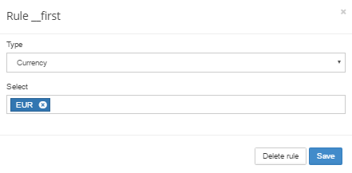
Для сохранения нажмите на кнопку 
Для удаления нажмите на кнопку 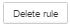
Следующим шагом является щелчок по ветви MID и выбор MID 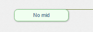
Скриншот :
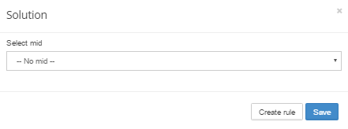
Для сохранения MID нажмите на кнопку
Для создания MID нажмите на кнопку 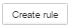
Так же настройте новый MID для неудачной попытке на предыдущий MID 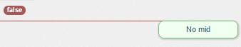
Пример
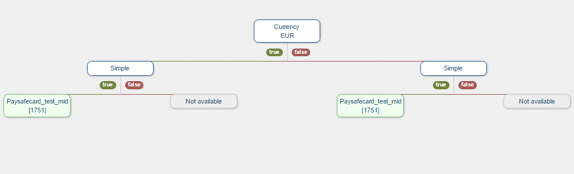
Пометка | Вы можете создать сколько угодно правил !
Для названия нового роутинга заполните поле
После настройки нажмите кнопку 
Вы можете посмотреть все версии
Section: Home Routes Alternative List
Назначение:
Секция позволяет найти все версии роутинга.
Для этого настройте фильтры
| Field | Description | Screenshot |
|---|---|---|
| Gates | Выбирете шлюз | 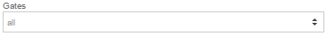 |
| Merchants | Мерчанта | 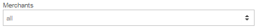 |
| Accounts | Аккаунт | 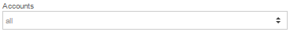 |
| Account states | Статус аккаунта
|
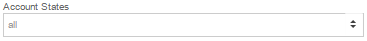 |
| Methods | Метод альтернативного платежа | 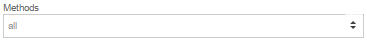 |
| Page limit | Лимит страницы | 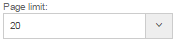 |
После этого нажмите на кнопку 
Пример
| Gate | Merchant | Account | Payment Method | Actions |
|---|---|---|---|---|
| Live gate | ABC | ABC_ACC_LIVE | AlterPay | |
| Live gate | NBV merchant | NBV_ACC_LIVE | PayPal | |
| Live gate | AST merchant | AST_ACC_LIVE | CoinPay |
Детали:
Кнопка - позволяет посмотреть настройки. Более подробнее в секции: Home Routes Alternative Create.